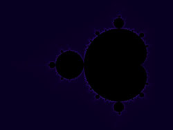
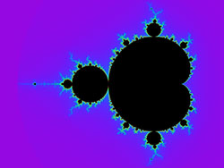
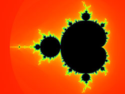
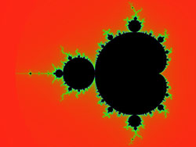
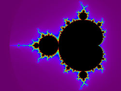

{kind=link}

Mandelbrot Set
Project files are available in the Mandelbrot GitHub repository.
A collection of small, independent C programs for rendering user-selected areas of the Mandelbrot set. The examples share the same core escape-time calculation while demonstrating several different ways to convert integer or smooth iteration counts into color.
About the project
The programs ask for the center coordinate, horizontal span, image dimensions, and maximum number of iterations, then write a 24-bit output.bmp. Pixel centers are sampled with equal coordinate spacing on the real and imaginary axes so the complex plane is not distorted.
basic.c demonstrates conventional integer escape-time coloring with an external palette file. The remaining programs use a continuous (smooth) iteration count and apply different palette formulae or color-space constructions. Points that do not escape within the selected maximum iteration count are rendered black.
The repository also contains a detailed mathematical derivation of the smooth iteration formula in README.md and an unchanged Microsoft Word version, Mandelbrot.docx.
Palette examples
Each thumbnail links to the corresponding full 3840 × 2880 example. The source link opens the C implementation in the repository.
{kind=link}

Cosine
Uses phase-shifted cosine functions for the red, green, and blue channels, driven by the smooth iteration count.
{kind=link}
Linear interpolation
Linearly interpolates between a sequence of RGB control colors to turn the smooth iteration count into a continuous gradient.
{kind=link}
Smoothstep
Applies cubic smoothstep easing between RGB control colors, giving each segment zero slope at its endpoints.
{kind=link}
Bézier
Uses a cubic Bézier curve through RGB space and traverses the curve forward and backward for a continuous repeating palette.
{kind=link}
Warm power
Uses progressively higher powers of a common parameter for the RGB channels to form a warm black-to-light color progression.
{kind=link}
Fire
Uses a cyclic heat-style progression through black, red, yellow, and white, with a smooth return to the beginning of the cycle.
{kind=link}

HSV to RGB
Maps the smooth iteration count around the HSV hue wheel at full saturation and value, then converts the result to RGB.
{kind=link}

Gaussian
Builds red, green, and blue from three phase-shifted Gaussian functions using circular distance to avoid a discontinuity at the wrap point.
{kind=link}
Cubehelix
Uses D. A. Green's Cubehelix construction, combining a controlled intensity progression with a rotating color component.
{kind=link}

Visible spectrum
Maps the smooth iteration count to an illustrative wavelength-like progression from violet through red and back again.
Building and running
The repository includes a root Makefile. GCC, GNU Make, and the standard math library are sufficient.
make
./cosineEach executable asks interactively for the region and image parameters and writes output.bmp. Remove or rename an existing output.bmp before rendering another image. make clean removes the generated executables, the root copy of the palette used by basic, and output.bmp.
To compile a smooth-coloring example individually:
gcc -Wall src/cosine.c -o cosine -lmInteresting coordinates
These coordinates are also listed in the source-code README and provide a progression from the whole set into progressively deeper structures.
| Real center | Imaginary center | Horizontal span | Description |
|---|---|---|---|
-0.7 | 0.0 | 3.0769 | Whole Mandelbrot set |
-0.87591 | 0.20464 | 0.53184 | Seahorse valley |
-0.759856 | 0.125547 | 0.051579 | Spirals and seahorses |
-0.74303 | 0.126433 | 0.01611 | Upside-down seahorse |
-0.7435669 | 0.1314023 | 0.0022878 | Seahorse tail |
-0.7436499 | 0.13188204 | 0.00073801 | Part of a tail |
-0.74364085 | 0.13182733 | 0.00012068 | Satellite |
-0.743643135 | 0.131825963 | 0.000014628 | Crowns and tails |
-0.743644786 | 0.1318252536 | 0.0000029336 | Antenna |
-0.74364409961 | 0.13182604688 | 0.00000066208 | Seahorse valley 2 |
-0.74364386269 | 0.13182590271 | 0.00000013526 | Spirals and seahorses 2 |
-0.743643900055 | 0.131825890901 | 0.000000049304 | Double spirals with satellites |
-0.7436438885706 | 0.1318259043124 | 0.0000000041493 | Outer appendices |
-0.74364388717342 | 0.13182590425182 | 0.00000000059849 | Double hook |
-0.743643887037151 | 0.13182590420533 | 0.000000000051299 | Islands |
Documentation
Smooth iteration coloring presents the complete derivation as a web page with rendered mathematics.
The unchanged repository documents remain available in their original forms: README.md, Mandelbrot.docx, and src/README.md.